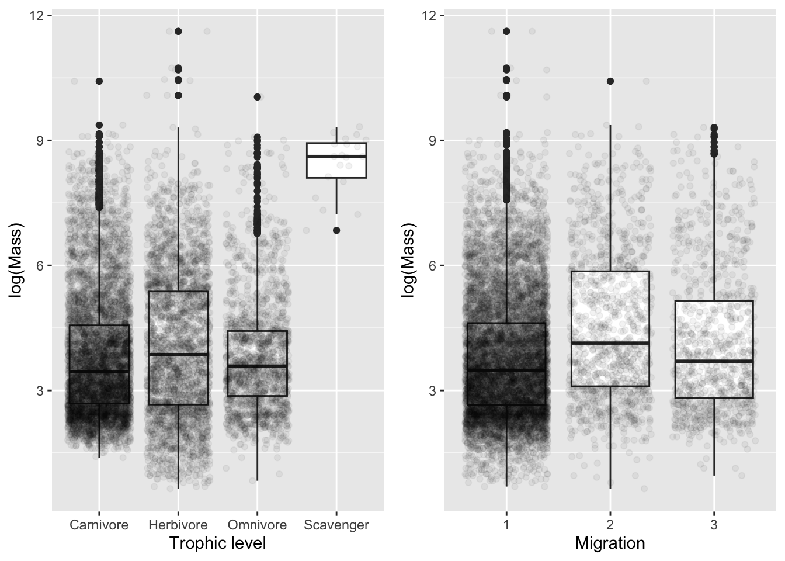
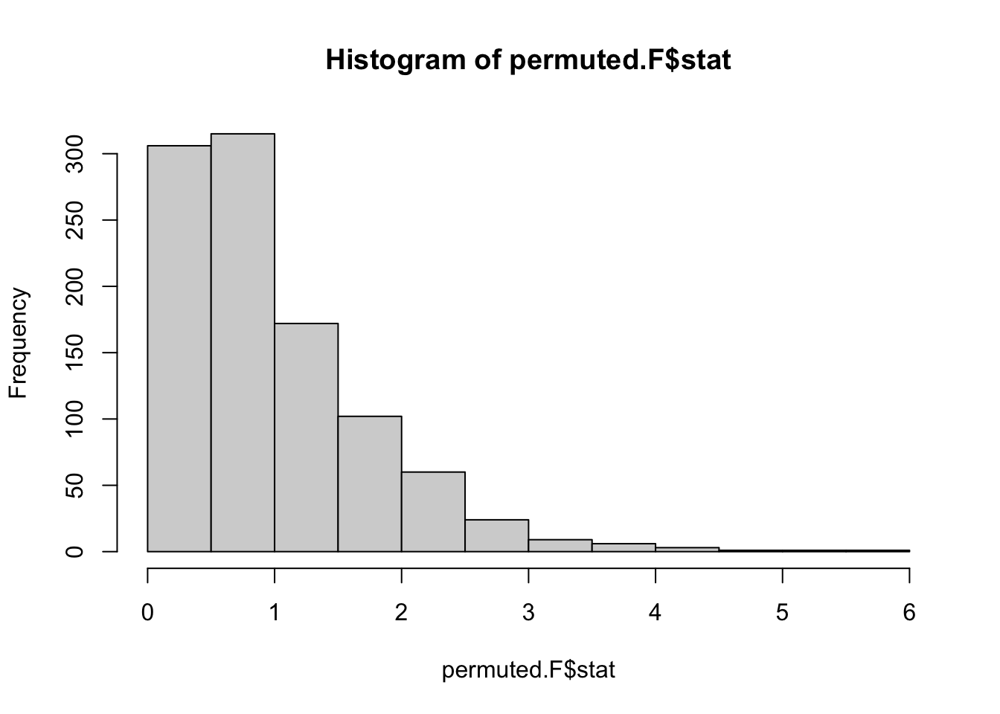
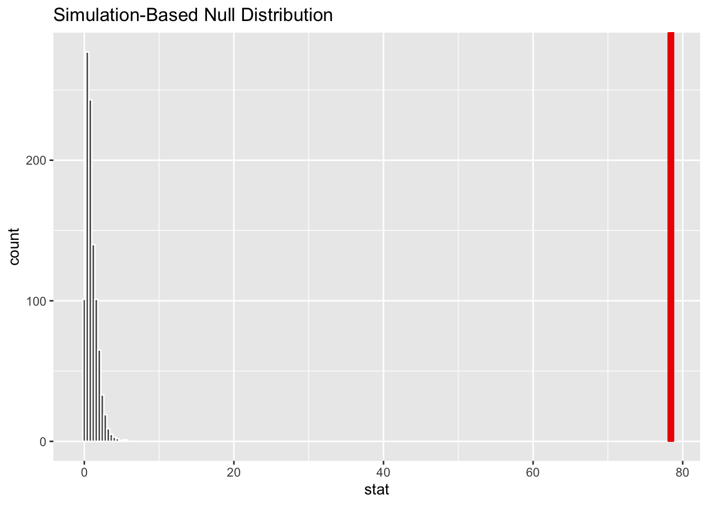
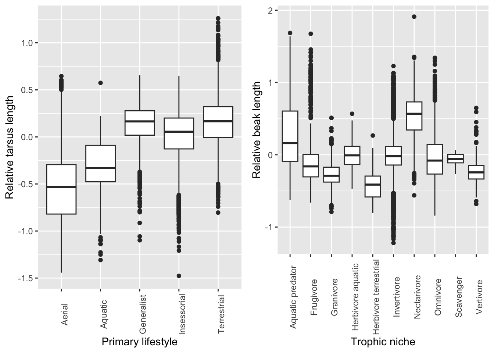
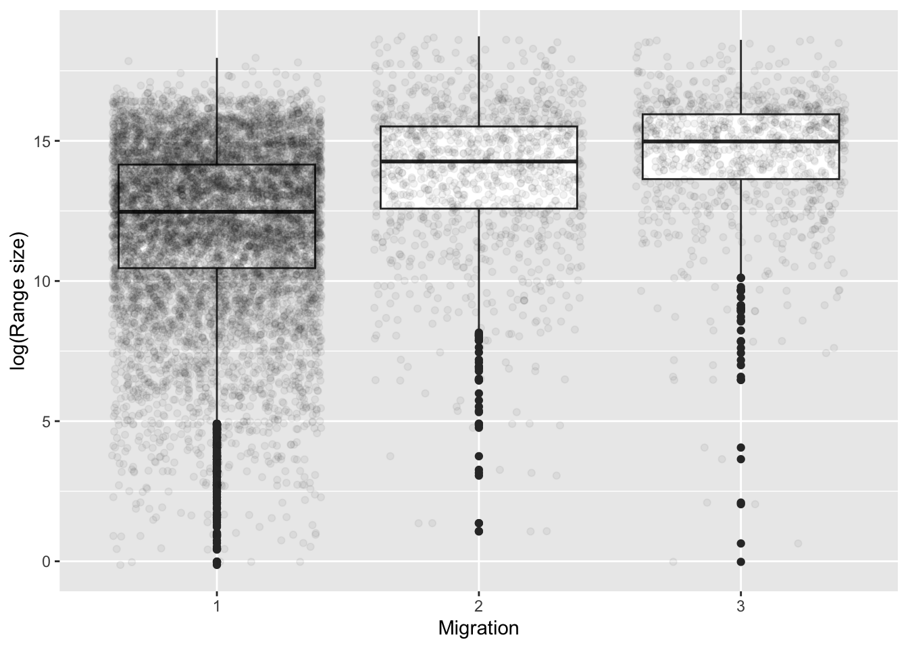
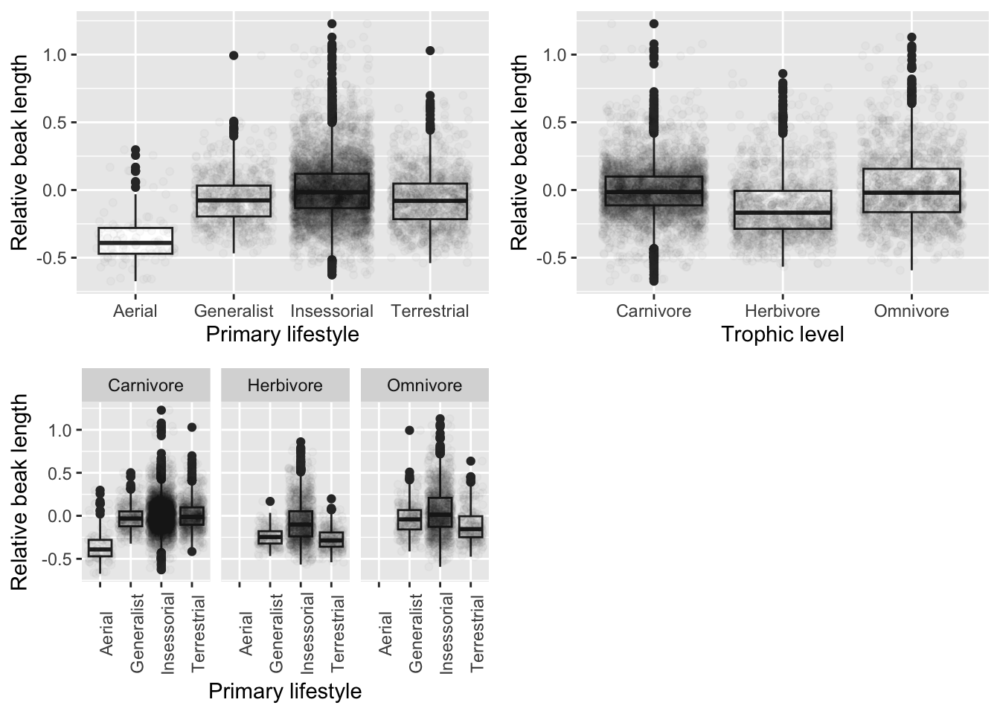
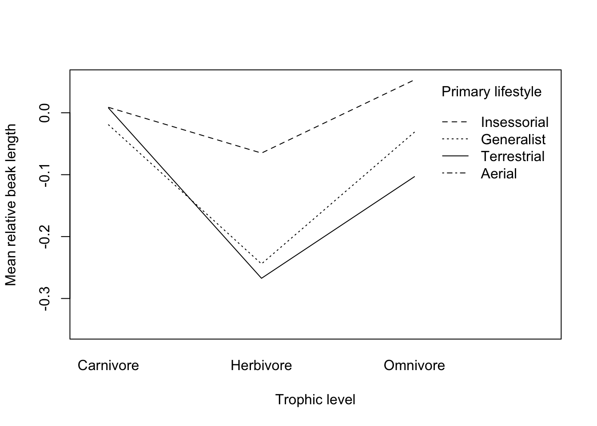

library(tidyverse)
library(broom)
d <- read_csv("https://raw.githubusercontent.com/difiore/ada-2024-datasets/main/AVONETdataset1.csv", col_names = TRUE)
# winnow data set
d <- d %>% select(Species1, Family1, Order1, Beak.Width, Beak.Depth, Tarsus.Length, Wing.Length, Tail.Length, Mass, Habitat, Migration, Trophic.Level, Trophic.Niche, Min.Latitude, Max.Latitude, Centroid.Latitude, Range.Size, Beak.Length_Culmen, Primary.Lifestyle)exercise-11
Exercise 11
Practice ANOVA
Preliminaries
Data source:
Tobias JA, et al. (2022). AVONET: Morphological, ecological and geographical data for all birds. Ecology Letters 25: 581–597.
- Load in Morphological measurements on birds, AVONET data set
- This is a recently published dataset that compiles morphological measurements and information on various ecological variables and geographic range data for more than 11,000 species of birds.
- Winnow the dataset to include only the following variables: Species1, Family1, Order1, Beak.Length_Culmen, Beak.Width, Beak.Depth, Tarsus.Length, Wing.Length, Tail.Length, Mass, Habitat, Migration, Trophic.Level, Trophic.Niche, Min.Latitude, Max.Latitude, Centroid.Latitude, Primary.Lifestyle, and Range.Size
- Run exploratory data analysis with this dataset and determine which variables are categorical and which are numeric.
glimpse(d)Rows: 11,009
Columns: 19
$ Species1 <chr> "Accipiter albogularis", "Accipiter badius", "Accip…
$ Family1 <chr> "Accipitridae", "Accipitridae", "Accipitridae", "Ac…
$ Order1 <chr> "Accipitriformes", "Accipitriformes", "Accipitrifor…
$ Beak.Width <dbl> 10.6, 8.8, 8.6, 8.9, 8.7, 6.6, 8.3, 7.7, 8.6, 8.6, …
$ Beak.Depth <dbl> 14.7, 11.6, 12.7, 11.9, 11.1, 12.0, 10.9, 9.6, 11.0…
$ Tarsus.Length <dbl> 62.0, 43.0, 58.1, 61.2, 46.4, 48.7, 52.6, 60.3, 43.…
$ Wing.Length <dbl> 235.2, 186.7, 229.6, 202.2, 217.6, 166.0, 163.5, 21…
$ Tail.Length <dbl> 169.0, 140.6, 186.3, 140.8, 153.5, 127.0, 135.4, 15…
$ Mass <dbl> 248.8, 131.2, 287.5, 142.0, 186.5, 122.0, 157.5, 16…
$ Habitat <chr> "Forest", "Shrubland", "Woodland", "Forest", "Fores…
$ Migration <dbl> 2, 3, 2, 2, 3, 1, 2, 2, 2, 3, 1, 1, 1, 1, 2, 1, 3, …
$ Trophic.Level <chr> "Carnivore", "Carnivore", "Carnivore", "Carnivore",…
$ Trophic.Niche <chr> "Vertivore", "Vertivore", "Vertivore", "Vertivore",…
$ Min.Latitude <dbl> -11.73, -29.47, -55.72, -6.31, 31.19, 7.87, -10.36,…
$ Max.Latitude <dbl> -4.02, 46.39, 23.73, -4.08, 55.86, 9.26, 10.12, 0.0…
$ Centroid.Latitude <dbl> -8.15, 8.23, -10.10, -5.45, 45.24, 8.42, 0.71, -23.…
$ Range.Size <dbl> 37461.21, 22374973.00, 14309701.27, 35580.71, 29367…
$ Beak.Length_Culmen <dbl> 27.7, 20.6, 25.0, 22.5, 21.1, 20.0, 20.5, 19.2, 20.…
$ Primary.Lifestyle <chr> "Insessorial", "Insessorial", "Generalist", "Insess…- Species, Family, Order, Habitat are categorical and character
- Migration is also categorical but numeric
- All others are numeric
Challenge 1
One-Factor ANOVA and Inference
Step 1
- Make boxplots of log(Mass) in relation to Trophic.Level and Migration behavior type. For each plot, drop from the visualization all species records where the categorical variable of interest is missing from the dataset. Also, convert the variable Migration (which is scored as a number: “1”, “2”, or “3”) from class numeric to either being classified as a factor or as a character (string) variable.
# plot Mass as a factor of Trophic Level
p1 <- ggplot(data = d %>% drop_na(Trophic.Level),
aes(x = Trophic.Level, y = log(Mass))) +
geom_boxplot() +
geom_jitter(alpha = 0.05) +
xlab("Trophic level")
# plot Mass as a factor of Migration (include argument as.factor())
p2 <- ggplot(data = d %>% drop_na(Migration),
aes(x = as.factor(Migration), y = log(Mass))) +
geom_boxplot() +
geom_jitter(alpha = 0.05) +
xlab("Migration")
library(ggpubr)
ggarrange(p1, p2,
labels = NULL,
ncol = 2, nrow = 1)
Step 2
- Run linear models using the
lm()function to look at the relationship between log(Mass) and Trophic.Level and between log(Mass) and Migration.
m1 <- lm(log(Mass) ~ Trophic.Level, data = d)
# need to coerce Migration as a factor before modeling
d <- d %>% mutate(Migration = as.factor(Migration))
m2 <- lm(log(Mass) ~ Migration, data = d)- Examine the output of the resultant linear models. Is log(Mass) associated with either Trophic.Level or Migration category? That is, in the global test of significance, is the F statistic large enough to reject the null hypothesis of an F value of zero?
# check beta coefficients
summary(m1) # low p value for F statistic, very low adjusted R squared
Call:
lm(formula = log(Mass) ~ Trophic.Level, data = d)
Residuals:
Min 1Q Median 3Q Max
-3.4229 -1.1551 -0.3028 0.8982 7.5526
Coefficients:
Estimate Std. Error t value Pr(>|t|)
(Intercept) 3.80834 0.01967 193.632 < 2e-16 ***
Trophic.LevelHerbivore 0.25639 0.03406 7.528 5.54e-14 ***
Trophic.LevelOmnivore 0.01422 0.04116 0.345 0.73
Trophic.LevelScavenger 4.63189 0.34447 13.446 < 2e-16 ***
---
Signif. codes: 0 '***' 0.001 '**' 0.01 '*' 0.05 '.' 0.1 ' ' 1
Residual standard error: 1.538 on 11000 degrees of freedom
(5 observations deleted due to missingness)
Multiple R-squared: 0.02094, Adjusted R-squared: 0.02067
F-statistic: 78.42 on 3 and 11000 DF, p-value: < 2.2e-16# Estimate tells us that for a change in trophic level from Carnivore (base) to Omnivore, there is a 25% increase in mean body mass
# The coefficient for the intercept, i.e. beta_0 reflects the estimate of the mean value for Carnivores
summary(m2)
Call:
lm(formula = log(Mass) ~ Migration, data = d)
Residuals:
Min 1Q Median 3Q Max
-3.8924 -1.1769 -0.3088 0.9152 7.8427
Coefficients:
Estimate Std. Error t value Pr(>|t|)
(Intercept) 3.77457 0.01636 230.710 < 2e-16 ***
Migration2 0.75971 0.04731 16.059 < 2e-16 ***
Migration3 0.37647 0.05155 7.303 3.02e-13 ***
---
Signif. codes: 0 '***' 0.001 '**' 0.01 '*' 0.05 '.' 0.1 ' ' 1
Residual standard error: 1.535 on 10983 degrees of freedom
(23 observations deleted due to missingness)
Multiple R-squared: 0.02563, Adjusted R-squared: 0.02546
F-statistic: 144.5 on 2 and 10983 DF, p-value: < 2.2e-16# migration
# sedentary = 1
# partially migratory = 2
# migratory = 3- Yes, log(Mass) is associated with both Trophic.Level and Migration, as both models have large F-statistics (78.42 and 144.5) and very low associated p-values (< 2.2e-16 for both)
- Given the regression coefficients returned for your Migration model, which Migration categor(ies) are different than the reference level? What level is the reference level?
- Partially migratory and migratory are different than sedentary, level 1.
- Relevel and assess differences among the remaining pair of Migration categories.
m2 <- lm(log(Mass) ~ Migration, data = d %>% mutate(Migration = relevel(Migration, ref = "3")))
summary(m2)
Call:
lm(formula = log(Mass) ~ Migration, data = d %>% mutate(Migration = relevel(Migration,
ref = "3")))
Residuals:
Min 1Q Median 3Q Max
-3.8924 -1.1769 -0.3088 0.9152 7.8427
Coefficients:
Estimate Std. Error t value Pr(>|t|)
(Intercept) 4.15104 0.04889 84.909 < 2e-16 ***
Migration1 -0.37647 0.05155 -7.303 3.02e-13 ***
Migration2 0.38324 0.06603 5.804 6.67e-09 ***
---
Signif. codes: 0 '***' 0.001 '**' 0.01 '*' 0.05 '.' 0.1 ' ' 1
Residual standard error: 1.535 on 10983 degrees of freedom
(23 observations deleted due to missingness)
Multiple R-squared: 0.02563, Adjusted R-squared: 0.02546
F-statistic: 144.5 on 2 and 10983 DF, p-value: < 2.2e-16- Partially migratory and Migratory are also different
- The coefficient for the intercept, beta_0, reflects the estimate of the mean log(Mass) for the first of our level variables
- The estimate of beta_1 is the estimated difference in mean log(Mass) associated with being that level relative to the first (reference) level
Step 3
- Conduct a post-hoc Tukey Honest Significant Differences test to also evaluate which Migration categories differ “significantly” from one another (see Module 20).
- After finding a significant omnibus F statistic in an ANOVA, we can test, post-hoc, what group means are different from on another using pairwise t-tests with an appropriate p value correction or a Tukey Honest Significant Differences test
m1 <- lm(log(Mass) ~ Trophic.Level, data = d)
summary(m1)
Call:
lm(formula = log(Mass) ~ Trophic.Level, data = d)
Residuals:
Min 1Q Median 3Q Max
-3.4229 -1.1551 -0.3028 0.8982 7.5526
Coefficients:
Estimate Std. Error t value Pr(>|t|)
(Intercept) 3.80834 0.01967 193.632 < 2e-16 ***
Trophic.LevelHerbivore 0.25639 0.03406 7.528 5.54e-14 ***
Trophic.LevelOmnivore 0.01422 0.04116 0.345 0.73
Trophic.LevelScavenger 4.63189 0.34447 13.446 < 2e-16 ***
---
Signif. codes: 0 '***' 0.001 '**' 0.01 '*' 0.05 '.' 0.1 ' ' 1
Residual standard error: 1.538 on 11000 degrees of freedom
(5 observations deleted due to missingness)
Multiple R-squared: 0.02094, Adjusted R-squared: 0.02067
F-statistic: 78.42 on 3 and 11000 DF, p-value: < 2.2e-16# alternative way to run simple linear regression with `aov()`
m1aov <- aov(log(Mass) ~ Trophic.Level, data = d)
summary(m1aov) Df Sum Sq Mean Sq F value Pr(>F)
Trophic.Level 3 557 185.50 78.42 <2e-16 ***
Residuals 11000 26020 2.37
---
Signif. codes: 0 '***' 0.001 '**' 0.01 '*' 0.05 '.' 0.1 ' ' 1
5 observations deleted due to missingness# Pairwise posthoc t-test
(pairwise.t.test(log(d$Mass), d$Trophic.Level, p.adj = "bonferroni"))
Pairwise comparisons using t tests with pooled SD
data: log(d$Mass) and d$Trophic.Level
Carnivore Herbivore Omnivore
Herbivore 3.3e-13 - -
Omnivore 1 6.7e-07 -
Scavenger < 2e-16 < 2e-16 < 2e-16
P value adjustment method: bonferroni # Tukey test runs on aov object and is a comparable test, run slightly different
(posthoc <- TukeyHSD(m1aov, which = "Trophic.Level", conf.level = 0.95)) Tukey multiple comparisons of means
95% family-wise confidence level
Fit: aov(formula = log(Mass) ~ Trophic.Level, data = d)
$Trophic.Level
diff lwr upr p adj
Herbivore-Carnivore 0.25638774 0.16888205 0.3438934 0.0000000
Omnivore-Carnivore 0.01422185 -0.09154436 0.1199881 0.9858317
Scavenger-Carnivore 4.63188503 3.74679736 5.5169727 0.0000000
Omnivore-Herbivore -0.24216589 -0.35936711 -0.1249647 0.0000007
Scavenger-Herbivore 4.37549729 3.48897045 5.2620241 0.0000000
Scavenger-Omnivore 4.61766318 3.72914808 5.5061783 0.0000000Step 4
- Use a permutation approach to inference to generate a null distribution of F statistic values for the model of log(Mass) in relation to Trophic.Level and calculate a p value for your original F statistic using the {infer} workflow and setting
calculate(stat="F").
library(infer)Warning: package 'infer' was built under R version 4.2.3# calculate the original F statistic
original.F <- aov(log(Mass) ~ Trophic.Level, data = d) %>%
tidy() %>% # pull table of coefficients from broom package
filter(term == "Trophic.Level") # assign results of specific variable
original.F # results for F stat and p value for omnibus F test# A tibble: 1 × 6
term df sumsq meansq statistic p.value
<chr> <dbl> <dbl> <dbl> <dbl> <dbl>
1 Trophic.Level 3 557. 186. 78.4 3.43e-50# generate a permutation distribution, breaking the association between predictor and response variable
# generate a separate variable for log of body mass
d <- d %>% mutate(logMass = log(Mass))
permuted.F <- d %>%
specify(logMass ~ Trophic.Level) %>%
hypothesize(null = "independence") %>%
generate(reps = 1000, type = "permute") %>%
calculate(stat = "F")Warning: Removed 5 rows containing missing values.permuted.FResponse: logMass (numeric)
Explanatory: Trophic.Level (factor)
Null Hypothesis: independence
# A tibble: 1,000 × 2
replicate stat
<int> <dbl>
1 1 0.880
2 2 1.26
3 3 2.45
4 4 1.04
5 5 0.616
6 6 0.573
7 7 0.107
8 8 0.688
9 9 0.496
10 10 0.827
# ℹ 990 more rowshist(permuted.F$stat) # zero bounded, with decay (looks like an F distribution!)
visualize(permuted.F) +
shade_p_value(obs_stat = original.F$statistic,
direction = "greater") # very far away from distribution because p value associated is very very tinyWarning in min(diff(unique_loc)): no non-missing arguments to min; returning
Inf
Statistics is always comparing an observed test statistic to a distribution (whether a standardized distribution OR permuted distribution of test statistics from your data set)
- The number of times you generate a test statistic under null that the actual value of test statistic exceeds that permuted value
- 1000 permutations is usually good, maybe 10000
Challenge 2
Data Wrangling, One- and Two-Factor ANOVA
Step 1
- Create the following two new variables and add them to AVONET dataset:
- Relative beak length = the residual of log(Beak.Length_Culmen) on log(Mass).
- Relative tarsus length = the residual of log(Tarsus.Length) on log(Mass).
# failed strategy for pulling residuals
#
# m2 <- lm(logMass ~ log(Beak.Length_Culmen), data = d)
#
# summary(m2)
#
# d <- d %>% mutate(relative_beak_length = m2$residuals)
#
# p <- ggplot(data = d %>% drop_na(Primary.Lifestyle), aes(x = Primary.Lifestyle, y = relative_beak_length)) + geom_boxplot() + theme(axis.text.x = element_text(angle = 90))
# p
d$relBL <- resid(lm(formula = log(Beak.Length_Culmen) ~ logMass, data = d))
d$relTL <- resid(lm(formula = log(Tarsus.Length) ~ logMass, data = d))Step 2
- Make a boxplot of relative tarsus length variable in relation to Primary.Lifestyle and of relative beak length variable in relation to Trophic.Niche
p1 <- ggplot(data = d %>% drop_na(Primary.Lifestyle),
aes(x = Primary.Lifestyle, y = relTL)) +
geom_boxplot() +
theme(axis.text.x = element_text(angle = 90)) +
xlab("Primary lifestyle") + ylab("Relative tarsus length")
p2 <- ggplot(data = d %>% drop_na(Trophic.Niche),
aes(x = Trophic.Niche, y = relBL)) +
geom_boxplot() +
theme(axis.text.x = element_text(angle = 90)) +
xlab("Trophic niche") + ylab("Relative beak length")
ggarrange(p1, p2,
labels = NULL,
ncol = 2, nrow = 1)
Step 3
- Run an ANOVA analyses to look at the association between geographic range size and the variable Migration
- Drop those observations for which Migration is not scored
- Look at the distribution of the variable Range.Size to decide whether and how it might need to be transformed (log)
- Based on the global model, is range size associated with form of migration? Yes
- How much of the variance in your measure of range size is associated with Migration behavior style? Adjusted r-squared = 0.08674, so 8.7% of the variance
- Given the regression coefficients returned in output of the model, which Migration categor(ies) are different than the reference level? What level is the reference level? Relevel and assess differences among the remaining pair of Migration categories. Also conduct a post-hoc Tukey Honest Significant Differences test to also evaluate which Migration categories differ “significantly” from one another (see Module 20).
Run an ANOVA on geographic range as a function of migratory status
m1aov <- aov(log(Range.Size) ~ Migration, data = d %>% drop_na(Migration))
summary(m1aov) Df Sum Sq Mean Sq F value Pr(>F)
Migration 2 8071 4035 520.3 <2e-16 ***
Residuals 10934 84798 8
---
Signif. codes: 0 '***' 0.001 '**' 0.01 '*' 0.05 '.' 0.1 ' ' 1
49 observations deleted due to missingnessTukeyHSD(m1aov) Tukey multiple comparisons of means
95% family-wise confidence level
Fit: aov(formula = log(Range.Size) ~ Migration, data = d %>% drop_na(Migration))
$Migration
diff lwr upr p adj
2-1 1.7846901 1.582952 1.986428 0
3-1 2.5170168 2.297150 2.736883 0
3-2 0.7323266 0.450689 1.013964 0ggplot(d %>% drop_na(Migration),
aes(x = as.factor(Migration), y = log(Range.Size))) +
geom_boxplot() +
geom_jitter(alpha = 0.05) +
xlab("Migration") + ylab("log(Range size)")Warning: Removed 49 rows containing non-finite values (`stat_boxplot()`).Warning: Removed 49 rows containing missing values (`geom_point()`).
# get the R-squared of the anova by looking at the summary output of the corresponding linear model
m1 <- lm(log(Range.Size) ~ Migration, data = d %>% drop_na(Migration))
anova(m1)Analysis of Variance Table
Response: log(Range.Size)
Df Sum Sq Mean Sq F value Pr(>F)
Migration 2 8071 4035.3 520.32 < 2.2e-16 ***
Residuals 10934 84798 7.8
---
Signif. codes: 0 '***' 0.001 '**' 0.01 '*' 0.05 '.' 0.1 ' ' 1summary(m1)
Call:
lm(formula = log(Range.Size) ~ Migration, data = d %>% drop_na(Migration))
Residuals:
Min 1Q Median 3Q Max
-14.5710 -1.4521 0.4357 1.9763 5.9271
Coefficients:
Estimate Std. Error t value Pr(>|t|)
(Intercept) 12.03381 0.02974 404.62 <2e-16 ***
Migration2 1.78469 0.08606 20.74 <2e-16 ***
Migration3 2.51702 0.09380 26.83 <2e-16 ***
---
Signif. codes: 0 '***' 0.001 '**' 0.01 '*' 0.05 '.' 0.1 ' ' 1
Residual standard error: 2.785 on 10934 degrees of freedom
(49 observations deleted due to missingness)
Multiple R-squared: 0.0869, Adjusted R-squared: 0.08674
F-statistic: 520.3 on 2 and 10934 DF, p-value: < 2.2e-16Step 4
- Winnow the data to just consider birds from the Infraorder “Passeriformes” (song birds).
d_pass <- d %>% filter(Order1 == "Passeriformes")- Run separate one-factor ANOVA analyses to look at the association between [1] relative beak length and Primary.Lifestyle and between [2] relative beak length and Trophic.Level.
- Make boxplots of response variable by each predictor and by the combination of predictors.
- Run linear models for each predictor separately and interpret the model output.
- Primary lifestyle and trophic level significantly effect relative beak length when modeled separately, based on large F values and very small p-value associated with each global model
m0aov <- aov(relBL ~ 1, data = d_pass)
m1aov <- aov(relBL ~ Primary.Lifestyle, data = d_pass)
summary(m1aov) Df Sum Sq Mean Sq F value Pr(>F)
Primary.Lifestyle 3 18.2 6.067 130.2 <2e-16 ***
Residuals 6610 307.9 0.047
---
Signif. codes: 0 '***' 0.001 '**' 0.01 '*' 0.05 '.' 0.1 ' ' 1m2aov <- aov(relBL ~ Trophic.Level, data = d_pass)
summary(m2aov) Df Sum Sq Mean Sq F value Pr(>F)
Trophic.Level 2 16.31 8.154 174 <2e-16 ***
Residuals 6611 309.81 0.047
---
Signif. codes: 0 '***' 0.001 '**' 0.01 '*' 0.05 '.' 0.1 ' ' 1p1 <- ggplot(data = d_pass %>% drop_na(Primary.Lifestyle),
aes(x = Primary.Lifestyle, y = relBL)) +
geom_boxplot() +
geom_jitter(alpha = 0.025) +
xlab("Primary lifestyle") + ylab("Relative beak length")
p2 <- ggplot(data = d_pass %>% drop_na(Trophic.Level),
aes(x = Trophic.Level, y = relBL)) +
geom_boxplot() +
geom_jitter(alpha = 0.025) +
xlab("Trophic level") + ylab("Relative beak length")
# combination
p3 <- ggplot(data = d_pass %>% drop_na(Primary.Lifestyle),
aes(x = Primary.Lifestyle, y = relBL)) +
geom_boxplot() +
facet_wrap(~ Trophic.Level) +
geom_jitter(alpha = 0.025) +
theme(axis.text.x = element_text(angle = 90)) +
xlab("Primary lifestyle") + ylab("Relative beak length")
library(ggpubr)
ggarrange(p1, p2, p3,
labels = NULL,
ncol = 2, nrow = 2)
Step 5
- Run a two-factor model to look at the association between relative beak length and both Primary.Lifestyle and Trophic.Level among the passeriforms.
- Based on the model output, what would you conclude about how relative beak length is related to these two variables? Both Trophic.Level and Primary.Lifestyle are predictive of relative beak length, and this combination accounts for 10.9% of the variance in relative beak length
m1aov2 <- aov(relBL ~ Trophic.Level + Primary.Lifestyle,
data = d_pass)
summary(m1aov2) Df Sum Sq Mean Sq F value Pr(>F)
Trophic.Level 2 16.31 8.154 185.7 <2e-16 ***
Primary.Lifestyle 3 19.57 6.523 148.5 <2e-16 ***
Residuals 6608 290.24 0.044
---
Signif. codes: 0 '***' 0.001 '**' 0.01 '*' 0.05 '.' 0.1 ' ' 1# get the R-squared of the anova by looking at the summary output of the corresponding linear model
m1 <- lm(relBL ~ Trophic.Level + Primary.Lifestyle,
data = d_pass)
summary(m1)
Call:
lm(formula = relBL ~ Trophic.Level + Primary.Lifestyle, data = d_pass)
Residuals:
Min 1Q Median 3Q Max
-0.65365 -0.13329 -0.02284 0.10274 1.20180
Coefficients:
Estimate Std. Error t value Pr(>|t|)
(Intercept) -0.349502 0.020958 -16.677 <2e-16 ***
Trophic.LevelHerbivore -0.126397 0.006761 -18.695 <2e-16 ***
Trophic.LevelOmnivore 0.012140 0.006450 1.882 0.0599 .
Primary.LifestyleGeneralist 0.301517 0.022582 13.352 <2e-16 ***
Primary.LifestyleInsessorial 0.375698 0.021295 17.642 <2e-16 ***
Primary.LifestyleTerrestrial 0.302119 0.021942 13.769 <2e-16 ***
---
Signif. codes: 0 '***' 0.001 '**' 0.01 '*' 0.05 '.' 0.1 ' ' 1
Residual standard error: 0.2096 on 6608 degrees of freedom
Multiple R-squared: 0.11, Adjusted R-squared: 0.1093
F-statistic: 163.4 on 5 and 6608 DF, p-value: < 2.2e-16Step 6
- Finally, run an additional two-way model with the same dataset and predictors, but adding the possibility of an interaction term using the colon operator (
:)- e.g., relative beak length ~ Primary.Lifestyle + Trophic.Level + Primary.Lifestyle:Trophic.Level.
- Based on the model output, what would you now conclude about how relative beak length is related to these two variables? Both Trophic.Level and Primary.Lifestyle are predictive of relative beak length, as is the interaction between these two predictors, all accounting for 13.5% of the variance in beak length
m2aov2 <- aov(relBL ~ Trophic.Level + Primary.Lifestyle + Trophic.Level:Primary.Lifestyle,
data = d_pass)
summary(m2aov2) Df Sum Sq Mean Sq F value Pr(>F)
Trophic.Level 2 16.31 8.154 191.08 <2e-16 ***
Primary.Lifestyle 3 19.57 6.523 152.84 <2e-16 ***
Trophic.Level:Primary.Lifestyle 4 8.41 2.102 49.26 <2e-16 ***
Residuals 6604 281.83 0.043
---
Signif. codes: 0 '***' 0.001 '**' 0.01 '*' 0.05 '.' 0.1 ' ' 1m2 <- lm(relBL ~ Trophic.Level + Primary.Lifestyle + Trophic.Level:Primary.Lifestyle,
data = d_pass)
summary(m2)
Call:
lm(formula = relBL ~ Trophic.Level + Primary.Lifestyle + Trophic.Level:Primary.Lifestyle,
data = d_pass)
Residuals:
Min 1Q Median 3Q Max
-0.64623 -0.12836 -0.02078 0.10070 1.21924
Coefficients: (2 not defined because of singularities)
Estimate Std. Error t value
(Intercept) -0.34950 0.02066 -16.918
Trophic.LevelHerbivore -0.27502 0.01562 -17.608
Trophic.LevelOmnivore -0.11080 0.01550 -7.150
Primary.LifestyleGeneralist 0.33010 0.02367 13.948
Primary.LifestyleInsessorial 0.35826 0.02104 17.031
Primary.LifestyleTerrestrial 0.35714 0.02210 16.162
Trophic.LevelHerbivore:Primary.LifestyleGeneralist 0.05033 0.02584 1.948
Trophic.LevelOmnivore:Primary.LifestyleGeneralist 0.09898 0.02351 4.210
Trophic.LevelHerbivore:Primary.LifestyleInsessorial 0.20115 0.01750 11.494
Trophic.LevelOmnivore:Primary.LifestyleInsessorial 0.15527 0.01726 8.996
Trophic.LevelHerbivore:Primary.LifestyleTerrestrial NA NA NA
Trophic.LevelOmnivore:Primary.LifestyleTerrestrial NA NA NA
Pr(>|t|)
(Intercept) < 2e-16 ***
Trophic.LevelHerbivore < 2e-16 ***
Trophic.LevelOmnivore 9.61e-13 ***
Primary.LifestyleGeneralist < 2e-16 ***
Primary.LifestyleInsessorial < 2e-16 ***
Primary.LifestyleTerrestrial < 2e-16 ***
Trophic.LevelHerbivore:Primary.LifestyleGeneralist 0.0515 .
Trophic.LevelOmnivore:Primary.LifestyleGeneralist 2.59e-05 ***
Trophic.LevelHerbivore:Primary.LifestyleInsessorial < 2e-16 ***
Trophic.LevelOmnivore:Primary.LifestyleInsessorial < 2e-16 ***
Trophic.LevelHerbivore:Primary.LifestyleTerrestrial NA
Trophic.LevelOmnivore:Primary.LifestyleTerrestrial NA
---
Signif. codes: 0 '***' 0.001 '**' 0.01 '*' 0.05 '.' 0.1 ' ' 1
Residual standard error: 0.2066 on 6604 degrees of freedom
Multiple R-squared: 0.1358, Adjusted R-squared: 0.1346
F-statistic: 115.3 on 9 and 6604 DF, p-value: < 2.2e-16# can do more variables using *
m1aov3 <- aov(relBL ~ Trophic.Level * Primary.Lifestyle * as.factor(Migration),
data = d_pass)Step 7
- Use the
interaction.plot()function to visualize the interaction between Primary.Lifestyle and Trophic.Level (see Module 20).
interaction.plot(
x.factor = d_pass$Trophic.Level,
xlab = "Trophic level",
trace.factor = d_pass$Primary.Lifestyle,
trace.label = "Primary lifestyle",
response = d_pass$relBL,
ylab = "Mean relative beak length"
)
Additional Steps?
(in progress)
In the exercise above, we really did not do any checking with this dataset to see if the data meet the primary assumptions for standard linear regression and ANOVA, which are that variables/residuals within each grouping level are roughly normally distributed and have roughly equal variances. Sample sizes within each grouping level should also be roughly equal. As noted in Module 20, a general rule of thumb for “equal” variances is to compare the largest and smallest within-grouping level standard deviations and, if this value is less than 2, then it is often reasonable to presume the assumption may not be violated.
Use this approach to see whether variances in across groups in your various models (e.g., for relative beak length ~ trophic level) are roughly equal. Additionally, do a visual check of whether observations and model residuals within groups look to be normally distributed.
- Check residual analysis by eye
Looking for a nice scatter of points around a horizontal line (should be no relationship)
library(car)
install.packages("jtools")
library(jtools)
plot(m1$model$Trophic.Level, residuals(m1))
plot(m1$model$Primary.Lifestyle, residuals(m1))
plot(fitted(m1), residuals(m1)) # plotting residuals given combinations of Trophic.Level and Primary.Lifestyle
plot(m1) # opens interactive plot window